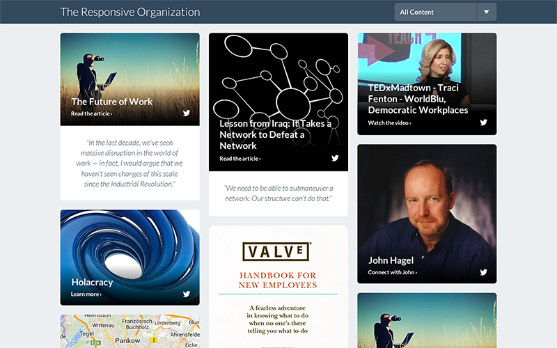

OUR WORK
OUR WORK
Irregardless - MVP
COMPLETED 2015
Ruby on Rails
Angular.js
SCSS
Google Docs API
MS Office API
Project Management
Front-End Web Development
Back-End Web Development
Internal API Development
MS Office & Google Docs Addons

Must Win defied the idea that tech projects are never completed on schedule or on budget. Better yet, they built an awesome MVP, bringing to bear keen consumer product instinct as well as deep engineering chops.
- Charles Best, Founder, DonorsChoose.org
Scoreboard - MVP
COMPLETED 2015
Ruby on Rails
Javascript
SCSS
GitHub API
Project Management
MVP Launch Hack Week
Product Concept & Design
Front-End Web Development
Back-End Web Development
Internal API Development
Scoreboard is the app Must Win built to manage our own consultancy. In 2015, we launched it as a SaaS beta. Scoreboard makes it easier to track time, employee utilization, profits, and it makes invoicing more simple! But, it also allows clients to see who’s working on what in real time, check their budget progress, view and pay invoices, and more!
Microsoft - AppAnnie Dash
COMPLETED 2014
Ruby on Rails
Javascript
SCSS
AppAnnie API
Project Management
UX Design
Front-End Web Development
Back-End Web Development
Deployment and Maintenance
Must Win was very responsive to our issues when we identified glitches. They understood the urgency of our needs and worked to rectify the problems. It was refreshing to work with such a responsive and collaborative team.
- D.D., Microsoft
Tenjin - Design Overhaul
COMPLETED 2014
Javascript
pjax
SCSS
Photoshop
UX Design
Front-End Web Development
Tenjin has a complex but incredibly powerful tool that helps app marketers keep tabs on their campaigns. What they needed was help simplifying the User Experience and developing the front end of the application. We hopped in, guns blazing, and made it happen in no time for the YC company!
Selequity - MVP
COMPLETED 2014
AngularJS
Ruby on Rails
SCSS
Sketch
Project Management
Product Design Hack Week
UX Design
Front-End Web Development
Back-End Web Development
To begin the project Must Win flew out to St. Louis for a Hack Week to collaborate and nail down the product vision and application specification. Then we returned to SF and worked over the coming months to developed and design their MVP in record time!
Photiq - Product Hack Week
COMPLETED 2014
User Flows
Wireframing
Photoshop
One Week Hack Week
Product Conceptualization
Mobile UX Design
Application Specification
Our Hack Week was excellent. I’m astounded of what came out of one week! I cannot thank Must Win enough for their wonderful design and UX work. I think it was the edge we needed to win, and I am grateful to have had the opportunity to work with their team!
- Nathan Koons, Founder, Photiq
CoTap - Web App UI
COMPLETED 2014
Ruby on Rails
Javascript
HTML5
SCSS
Web Development
We had a lot to get done to get our site into shape to match a big mobile launch, and the Must Win crew helped us make it happen. They were professional, reliable, and their code fit right in with our existing architecture. We were able to focus our engineers on the mobile app, knowing we weren’t going to come back to a bunch of tech debt after the release.
- Zack Parker, CoFounder & CTO, CoTap
See.me - Launch Help
COMPLETED 2014
PHP
Javascript
HTML5
CSS3
Fixed Timeline Sprint
UI Design
Front-End Development
Back-End Development
Team Enhancement
Must Win joined our team seamlessly and became a fundamental part of an important product launch. They were productive from day one, efficient, highly skilled, self-sufficient, and a great cultural fit. Hiring them was one of the best decisions I’ve made for the company.
- Jared Cohen, COO See.Me
Voxer - CMS Integration
COMPLETED 2014
CMS
HTML5
CSS3
Web Development
CMS Integration
CMS Themeing
Must Win was amazing to work with! They helped us transition from our old CMS to a new one. They not only got things done extremely quickly but everything was super maintainable when they handed it off. We were able to jump right in an understand the code they wrote and make any changes we needed easily. Absolutely great working with all of them!
- Greg Matthews, Project Lead, Voxer
Getable - CMS Integration
COMPLETED 2014
CMS
HTML5
CSS3
Fixed Timeline Sprint
Web Development
CMS Integration
CMS Themeing
We needed to update the public facing site for our web app quickly. We handed them the designs and they got started right away. These guys are professionals.
They got the work done under budget and faster than we forecasted. They even helped us learn the new CMS and provided guidance on deployment. If you’re looking for a team to tackle a hard problem quickly, MustWin is it.
They got the work done under budget and faster than we forecasted. They even helped us learn the new CMS and provided guidance on deployment. If you’re looking for a team to tackle a hard problem quickly, MustWin is it.
- Daniel Erickson, CTO, Getable

Yammer - Responsive Org
COMPLETED 2013
Ruby on Rails
HTML5
CSS3
Project Management
Fixed Timeline Sprint
Front-End Development
Back-End Development
Must Win helped us accomplish something many said wouldn't be possible, build a brand new, dynamic website in under a week. Not only did they complete it in time, but also completed important additional features!
- Adam Pisoni, CoFounder & CTO, Yammer
Docurated - TCD Launch
COMPLETED 2013
Ruby on Rails
Dropbox API
HTML5
CSS3
Fixed Timeline Sprint
UI Design
Front-End Development
Back-End Development
The Must Win team executed exceptionally well under tight timelines and with minimal supervision. They were a critical part of our launch plan. Our partnership with them resulted in enormous inbound demand.
- Alex Gorbansky, Founder of Docurated
CoTap - iOS Prototype
COMPLETED 2013
Native iOS
Ruby on Rails
Photoshop
UX Design
iOS Development
Back-End Development
MustWin helped us launch months ahead of time with amazing funding terms. They built us a great prototype that really showed off our vision.
- Jim Patterson, Founder & CEO, CoTap